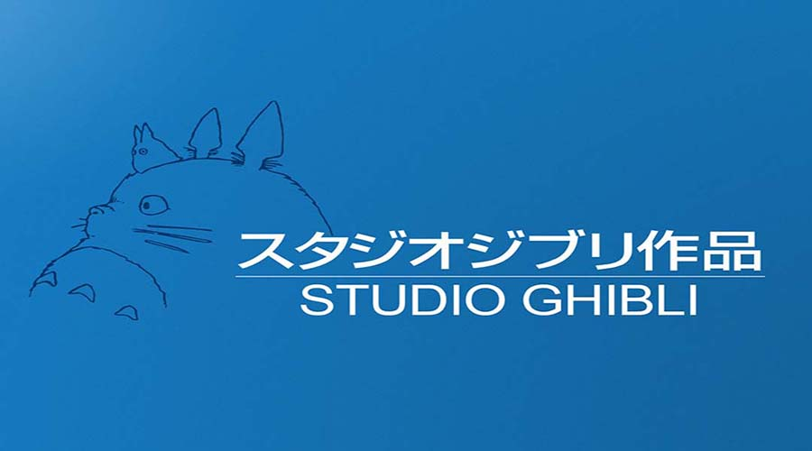
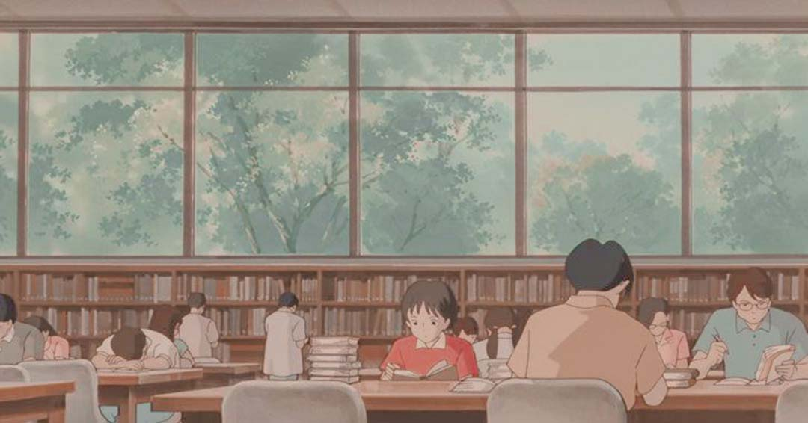
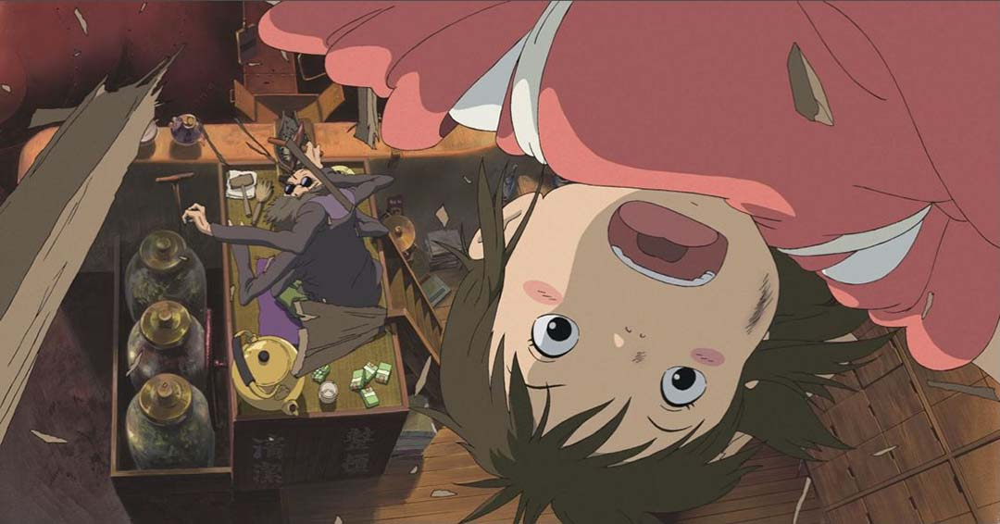

Studio Ghiblis es un estudio japonés de animación, considerado por la crítica especializada y muchos cinéfilos como uno de los mejores estudios de animación del mundo en la actualidad.


El estudio es conocido por sus largometrajes animados y también ha producido varios cortometrajes, comerciales de televisión y una película para televisión. Fue fundado el 15 de junio de 1985 por los directores Hayao Miyazaki e Isao Takahata y el productor Toshio Suzuki, después del éxito de la película de anime de Topcraft Nausicaä del Valle del Viento (1984). Studio Ghibli también ha colaborado con estudios de videojuegos en el desarrollo visual de varios videojuegos. 
Seis de las películas de Studio Ghibli se encuentran entre las 10 películas de anime más taquilleras realizadas en Japón, siendo El Viaje de Chihiro (2001) la segunda más alta, recaudando más de 360 millones de dólares en todo el mundo. Muchos de sus trabajos han ganado el premio Animage Anime Grand Prix, y cuatro han ganado el Premio de la Academia Japonesa de Animación del Año. Cinco de las películas de Studio Ghibli han recibido nominaciones al Óscar. El Viaje de Chihiro ganó el Oso de Oro en 2002 y el Premio de la Academia a la Mejor Película de Animación en 2003. Totoro, un personaje de Mi vecino Totoro, es la mascota del estudio.